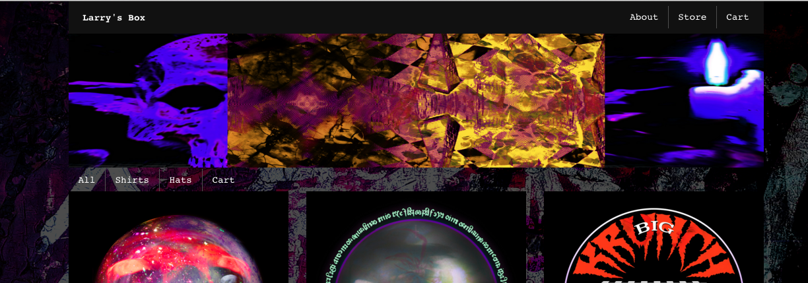
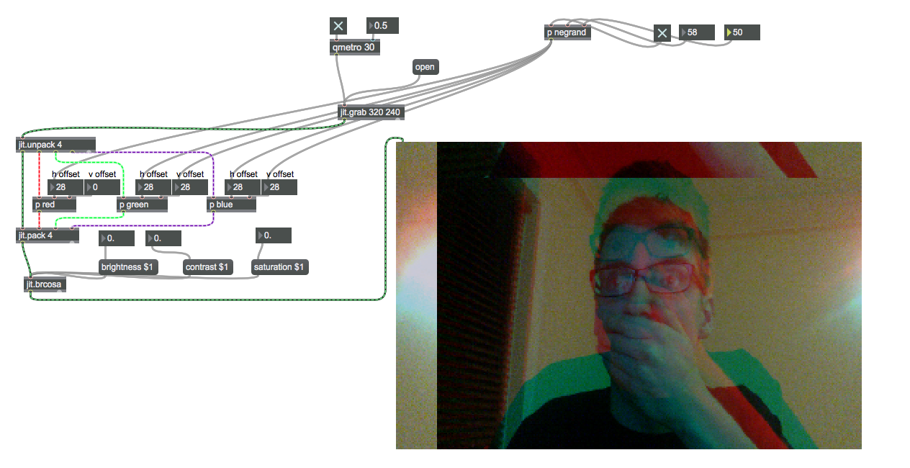

Larry's Box - Online Clothing Store

My pal Larry Gintz asked me to make a web store for him to sell clothing with his own custom designs on. The site is hosted on Big Cartel, and is fully customized on the front end using the Big Cartel Theme API amongst other languages.
I used HTML,CSS,and Foundation to customize all of the layout, and Photoshop to edit some of the photos. I used both The
Big Cartel theme language, and their Javascript API to access things such as store data. Javascript, and Jquery have also been utitlized for interactivity.
Ol' Larry is still working on the shirts, and hats themselves, so touching up will most likely be done when that occurs.
Furgonana - Interactive Web Map

For this project I have been asked to create an interactive web map for the travels of documentary maker María Gisèle Royo.
She traveled various parts of the americas documenting regional lullabies, and social issues. More info on her work can be found here: LINK. I have used the Google Maps JavaScript API to make this map. The map data is held through a KML file, which includes the cordinates of each point, an icon, and the content related to each location. The user upon clicking the icon of a location acceses a window of the content. I have used the List.js library to have a search, and sort of the cities in the project. Upon clicking a city in the list the map zooms onto that particular location. This a work in progress from my technical stand point, and Maria and still gathering content for a large number of the citites.
Technology utilized: HTML,CSS,Foundation,JavaScript,KML
Max/Msp/Jitter

I have been dabbling with Max/Msp/Jitter for alittle over a year now to create music, and visual manipulation. I have made patches that alter videos, webcam footage, and samplers, and sequeuncers.
More details can be found on github
Music

I have been playing Guitar since I was 10 years old, and have been making music on a computer since around 14. I have used Ableton Live, Reason, various VSTs, and many different forms of hardware throughout my time of making music. I have released ambient music under the name aldenwels, and dance music under Quam. I have played shows throughout the country as Quam.